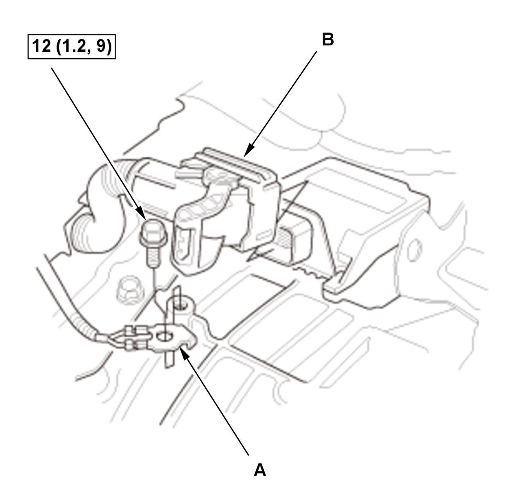
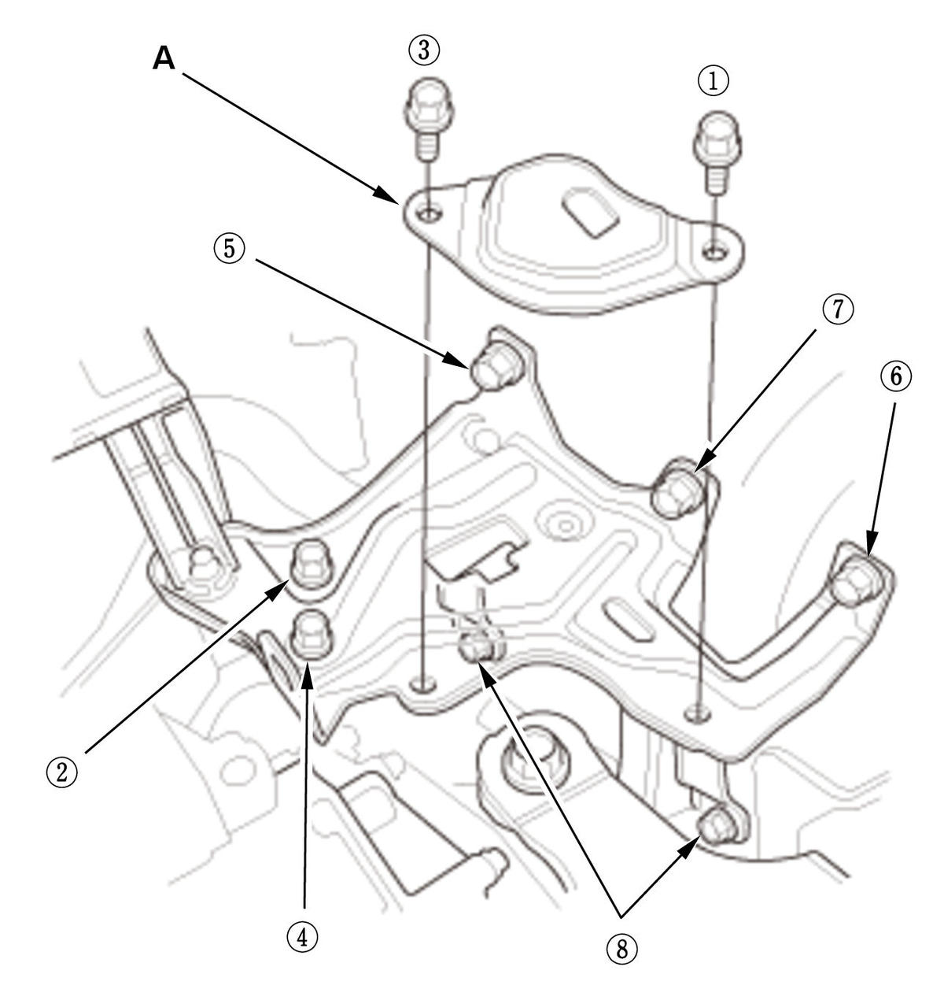

Engine Removal and Installation (1.5L Engine): Installation
NOTE: How to read the torque specifications.
- Torque Rod Bracket - Install
1. Install the torque rod bracket, then tighten their bolts to the specified torque.
- Engine/Transmission Assembly - Position
1. Position the engine/transmission assembly under the vehicle, and be sure that they are properly positioned. Carefully lower the vehicle, and stop with the installation position of the engine/transmission assembly. - Universal Lifting Eyelet - Install
- Chain Hoist - Install
1. Attach a chain hoist (A) to the universal lifting eyelet and the transmission hanger (B), then lift the engine/transmission until it is securely supported by the chain hoist.
- Transmission Mount Bracket Mounting Bolt and Nut - Loosely Install
M/T
CVT
- Engine - Support
1. Lift and support the engine with a jack and a wood block under the oil pan. - Chain Hoist and Universal Lifting Eyelet - Remove
- Side Engine Mount - Loosely Install
- Vehicle - Lift
1. Raise the vehicle. - Front Driveshaft - Install
- Front Subframe - Support
1. Set the subframe adapter (VSB02C000016) on a transmission jack (A), line up the slots in the arms with the bolt holes on the corner of the jack base, and tighten the bolts. 2. Attach the subframe adapter to the front subframe (B).
- Front Subframe - Install
- Lower Arm Mounting Bolt - Install
- Torque Rod Mounting Bolt - Loosely Install
- All Engine Mount Mounting Bolt and Nut - Tighten
- Lower Arm Ball Joint - Connect
- Lower Stabilizer Link Ball Joint - Connect
- Tie-Rod End Ball Joint - Connect
- Exhaust Pipe A - Install
- Front Floor Brace - Install (With Front Floor Brace)
- Connector (EPS Subharness) - Connect
- A/C Compressor - Install
- Drive Belt - Install
- Lower Radiator Pipe - Install
1. For some models: Install the washers (A). 2. Install the lower radiator pipe (B).
3. Connect expansion tank outlet hose B (C) and lower radiator hose B (D).
- Intake Air Resonator - Install
- Front Brace - Install
- Vehicle - Lift
1. Lower the vehicle. - Steering Joint - Connect
- Radiator Assembly - Install
- Water Bypass Hose and Heater Hose - Connect
1. Connect the water bypass hose (A) and the heater hoses (B).
- Change Wire Bracket - Install (M/T)
- Slave Cylinder - Install (M/T)
- Shift Cable - Install (CVT)
- Connector (TCM) - Connect (CVT)

Courtesy of HONDA, U.S.A., INC.1. Install the ground cable (A). 2. Connect the connector (B).
- Fuel Feed Hose - Connect
1. Connect the fuel feed hose (A), then install the quick-connect fitting cover (B) .
2. Install the fuel feed hose to the clamp (C). - Brake Booster Vacuum Hose, Intake Air Duct G, and EVAP Canister Purge Hose - Connect
1. Connect the brake booster vacuum hose (A), the EVAP canister purge hose (B) and intake air duct G.
- Engine Wire Harness - Install
1. Install the engine wire harness (A).
2. CVT: Install the TCM harness (B).
3. Connect the connectors (C).
4. Install the cables (D).
5. Install the covers (E).
- Intake Air Duct F - Install
- Intake Air Duct E - Install
- PCM - Install
- 12 Volt Battery Set Patch - Install

Courtesy of HONDA, U.S.A., INC.1. Loosen the 12 volt battery base mounting bolts. 2. Install the 12 volt battery set patch (A).
3. Tighten the 12 volt battery set patch mounting bolts and the 12 volt battery base mounting bolts, in sequence, to the specified torque.
NOTE: Bolt is not on all models.
Specified Torque: , , , and 9.3 N.m (0.95 kgf.m, 6.9 lbf.ft) , , , and 22 N.m (2.2 kgf.m, 16 lbf.ft) - 12 Volt Battery - Install
- Air Cleaner - Install
- Transmission Fluid - Refill
- Engine Oil - Refill
- Engine Coolant - Refill
- Fuel Leak (Low Pressure Side) - Check
1. Turn the vehicle to the ON mode, but do not start the engine. After the fuel pump runs for about 2 seconds, the fuel line will be pressurized. Repeat this two or three time, then check for fuel leakage. - Fuel Leak (High Pressure Side) - Check
- Fluid Leak - Check
- Vehicle - Lift
1. Raise the vehicle. - Engine Undercover - Install
- Engine Undercover Lid - Install (With Engine Undercover Lid)
- Front Wheel - Install
- Vehicle - Lift
1. Lower the vehicle. - PCM - Reset
- CKP Pattern - Clear/Learn
- PCM Idle - Learn
- Idle Speed - Inspect
- Ignition Timing - Inspect
- Transmission Gear - Check (M/T)
1. Check that the transmission shifts into all gears smoothly. - Shift Cable - After Install Check (CVT)
- Wheel Alignment - Check
- VSA Sensor Neutral Position - Memorize